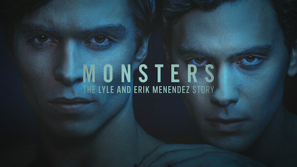

CINE Y SERIES
Últimas Reseñas de Cine
Reseña: "Dune" La épica de Denis Villeneuve

"Dune II" llega para sumergirnos aún más en el épico universo creado por Frank Herbert. Con su mezcla de ciencia ficción y aventuras épicas, este videojuego promete una experiencia intensa y estratégica. Exploramos las nuevas facciones, las batallas y el vasto mundo del desierto que sigue atrapando tanto a los fanáticos de la saga como a los nuevos jugadores. Una secuela que va más allá de lo esperado y que promete consolidar su lugar como un clásico dentro del género. No te pierdas los detalles de lo que hace que "Dune II" sea una obra imprescindible para los amantes de la ciencia ficción. Un viaje lleno de intriga, poder y confrontaciones en un mundo que desafía los límites de la imaginación.
Ver mas10 películas de los Estudios A24 que no te podés perder

Las películas de Estudios A24 nos han dado algunas de las mejores historias del cine contemporáneo. Este estudio se ha convertido en sinónimo de calidad y originalidad. En esta lista, repasamos las 10 películas que han marcado tendencia, con narrativas arriesgadas y personajes inolvidables. Desde el terror psicológico hasta los dramas más íntimos, A24 nos sigue sorprendiendo con su sello único. No te pierdas las recomendaciones que te harán ver el cine con una nueva perspectiva. Una selección que celebra lo mejor del cine independiente y vanguardista.
Ver masÚltimas Reseñas de Series
Reseña: The Rings of Power: La 2da temporada a fondo

Con "The Rings of Power: Season 2", la épica de la Tierra Media continúa. La serie promete profundizar en los orígenes de los Anillos de Poder y los conflictos que forjaron la Segunda Edad. Las tramas se vuelven aún más complejas, con nuevas alianzas y traiciones que dejan en vilo a los fanáticos de El Señor de los Anillos. Exploramos lo que nos depara esta nueva temporada y cómo amplía el universo que tanto amamos. Una secuela que sigue elevando el nivel de producción y narrativa, manteniendo el legado de Tolkien. No te pierdas lo que promete ser una exploración aún más épica de la mitología tolkieniana.
Ver masAnálisis de Monster: La serie sobre los hermanos Menendez
"Monsters" de los Hermanos Menendez es una serie que explora los límites de lo oscuro y lo inquietante. Con un tono cautivador y atmósferas perturbadoras, los hermanos nos llevan por un viaje en el que la tensión y lo desconocido dominan. Las historias que cuentan nos sumergen en un mundo de misterio y terror psicológico, con personajes que enfrentan sus propios monstruos internos. Aquí analizamos lo que hace que esta serie sea única y aterradora, y cómo los Hermanos Enjuiciados siguen siendo referencia en el género. No te pierdas esta exploración de lo macabro y lo inquietante que logra atraparte desde el primer episodio. Una propuesta que te llevará a cuestionar tus propios límites del miedo.
Ver mas